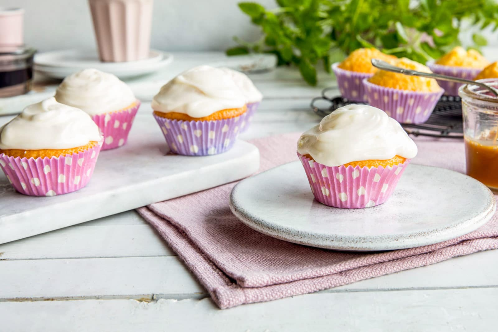

Melisglasur (icing)★
 1
servings
1
servings 10
minutes
10
minutes Source
Source Vegan
Vegan Sweet
Sweet
Norwegian Melisglasur

165 gconfectioners sugar3 tbspwater, milk, or egg whites1 tbsplemon juice
Mix all the incredients together in a bowl.
If it’s too dry add more water/egg whites. If it’s too liquidy add more sugar.
Use for toppings on muffins, boller or other baking goods.